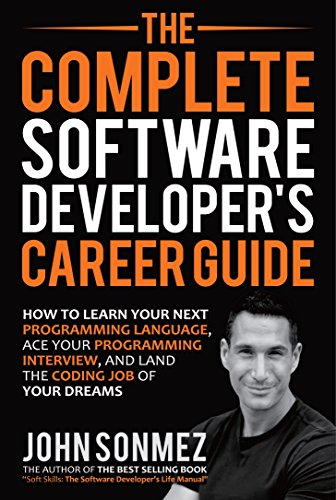

The Complete Software Developer’s Career Guide
Posted on 01/12/2018
At the start of my blogging, I’ve mentioned John Sonmez earlier in a different blog post on how he inspired me to start my own blog. I cannot stop but mention his book too.
As the name suggests, it’s a complete guide from a retired “developer” (in simple terms) who has been in the tech world for a good amount of time. This is the kind of book where you don’t need to commence reading from start till end. The book has been laid out in different topics where each chapter is a guide on succeeding in this industry for individuals who have different level of expertise. As you skim through the pages and get to the end, you realise how many topics he’s covered in terms of both technically and professionally, from helping out beginners on how to get started to be a developer of any sort to experienced developers advancing their career and there’s a lot of stuff going on in between.
Being a recent graduate with no commercial experience, I can certainly tell you that this book provided me information regarding to the types of employment, interview processes and how distinct tech companies are in terms of their candidate selection and the environment. The book also enlightened me on what sort of technology the companies generally use and what to expect so I don’t go in like a headless chicken. As a matter of fact it answered almost all the questions I had before I started my job hunt and gave me some sense on what to expect and how to succeed in this industry.
Taken from the preface, the types of questions answered; “Questions like: How do I get started as a software developer? How do I learn technical skills? How do I negotiate my salary or pick between a contract job and salaried employment? How do I deal with my boss, my coworkers, prejudice, women in tech, being a woman in tech? What do I really need to know and how can I learn it? College, boot camp, self-taught? How do I find a job? What if I don’t have any experience? How do I pass an interview? How should I dress? How can I advance my career and take it to the next level?”
In conclusion, you can always keep this book for a quick advice on whatever you are struggling with in the tech industry and keep you on the path of success. Thus, I highly recommend this book to individuals who are looking for a career in software development and secondly to existing experienced developers of any level in order to keep refreshing their goals and maybe pick up a thing or two on advancing your career.
You can pick up The Complete Software Developer’s Career Guide on kindle for quite a cheap price of £3.50.